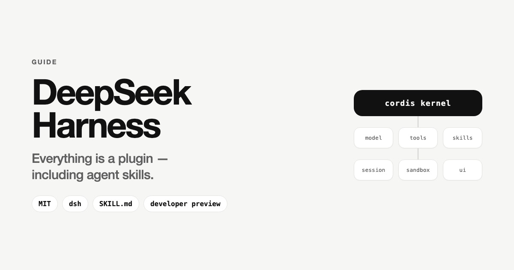

Guides
What is DeepSeek Harness?
DeepSeek published the runtime layer that turns a model into an agent. Here is how its plugin architecture works, how its Agent Skills system relates to the SKILL.md format you may already use, and what state the code is actually in.

On August 13, 2026, DeepSeek released
DeepSeek Harness
(dsh) as open source under the MIT license. The project is an agent runtime
written in TypeScript. On launch day the repository showed roughly 27,500 stars and 2,000
forks; as of this writing it reports approximately 156,100 stars and 16,200 forks.
The release matters for anyone who maintains agent skills, because Harness reads the same
SKILL.md format that Claude Code uses. Skills you already have work in
dsh without edits.
The core premise: model plus harness equals agent
DeepSeek frames the release around a single formula: a model becomes an agent through the harness around it. The harness is the runtime layer that wraps the large language model and handles tool calling, context management, task planning, error recovery, and termination logic.
Coding agents such as Claude Code and Codex each ship their own harness as closed software. That arrangement makes vendor benchmark claims difficult to attribute, because a published score reflects the combined performance of a model and an undisclosed runtime.
DeepSeek published the runtime in full. The methodology footnotes for the V4-Pro benchmarks name Minimal mode from Harness as the harness used, so the configuration behind those numbers is now inspectable code.
Architecture: the Cordis kernel
The framework sits on Cordis, a meta-framework that handles plugin mounting, unmounting, and dependency resolution. DeepSeek states the design principle directly: everything is a plugin, and every run is traceable.
Every agent capability ships as a plugin: model adapters, tool registries, skill libraries, session management, sandboxes, storage backends, the main agent loop, schedulers, and the user interface. Developers select, swap, or extend any capability in configuration, without modifying Harness source code.
A plugin is a TypeScript module that exports an apply function, through which
it registers its capabilities. Three forms are supported: function, object, and class. The
framework automatically cleans up registered resources such as event listeners, timers,
and tools when a plugin unloads, and resolves dependencies through an inject
declaration that guarantees required services load first.
Four runtime modes
| Mode | What it includes |
|---|---|
| Standard | Full toolset: file editing, shell, file and web search, skills, planning, subagents, and workflows. |
| Code | The model orchestrates multi-step operations through a TypeScript SDK rather than discrete tool calls. |
| Minimal | Two tools only, bash and a string-replacement editor. This is DeepSeek's own benchmark harness. |
| Creator | Standard capabilities plus runtime inspection, for building and experimenting with custom modes. |
Session logging
Harness records everything the model sees in an append-only session log: prompts, reasoning, tool calls, and context injections. From that same event stream, a session can be resumed, forked, searched, and replayed. For debugging agent behavior, this gives a reproducible record of each run.
Agent skills in DeepSeek Harness
Harness implements the SKILL.md skill format that Anthropic defined for
Claude Code, down to the directory layout, the frontmatter keys, and a discovery root
shared by convention with other skills-aware agents on the same machine. A skill written
for Claude Code runs in dsh unchanged. If you are new to the format, start
with our guide on
what AI agent skills are.
The format
A skill is a folder containing a SKILL.md file with YAML frontmatter and a
Markdown body. This example comes from DeepSeek's own repository:
---
name: dsh-code-review
description: >
Use when reviewing a pull request in the deepseek-harness repo — orients
the reviewer to this codebase's standards (AGENTS.md conventions,
defensive patterns, ADRs, quality gates) and the review-specific checks
that code alone can't show
---
The frontmatter requires name and description. Harness also
reads whenToUse, plus two keys that control invocation:
disable-model-invocation decides whether the model may call the skill on its
own, and user-invocable decides whether a person may call it. Both default to
enabled when the field is omitted.
Two layouts are accepted: a directory bundle written as
<name>/SKILL.md, and a flat Markdown file written as
<name>.md.
Progressive disclosure keeps the context window clear
DeepSeek's own skills follow a size convention: the main file stays at or under roughly
300 lines, with supporting detail in a references/ directory. The model sees
a short description first, loads the full skill body when the skill triggers, and reads
reference files only when a task calls for them. Skill content stays out of the context
window until it is needed.
Where the agent looks for skills
Skills live as ordinary folders on disk. Before an agent can use one, it has to learn the
skill exists, and that step is called discovery. At startup, dsh walks a
fixed list of directories and collects everything it finds into a single catalog.
There are six such directories, and the set is deliberate. Some belong to the current project, some to you as a user, and one ships inside Harness itself. That raises the obvious question: what happens when a skill with the same name sits in two of them? Each directory carries a priority number for exactly that case.
| Priority | Directory | Scope |
|---|---|---|
| 100 | <project>/.dsh/skills | Project |
| 200 | <project>/.agents/skills | Project |
| 300 | Directories listed in customSkillDirs | User |
| 400 | <dshHome>/skills | User |
| 500 | <agentsHome>/skills, in practice ~/.agents/skills | User |
| 600 | The directory bundled with Harness | Built-in |
The lower number wins. A skill found at 100 overrides a skill of the same name at 200, 400, or 600.
The order runs from most specific to most general: the project overrides your personal setup, and your setup overrides what ships with the tool. The practical payoff sits in the two project-level entries. A repository can commit a skill that everyone working in it picks up automatically, and that version takes precedence over each contributor's personal one, without anyone changing their own configuration.
Two details are worth knowing before you place a file. Discovery goes one level deep, so
dsh reads folders and files directly inside a root and a skill buried in a
nested subfolder stays invisible. And the catalog refreshes as soon as the files change,
so adding or editing a skill needs no restart.
Installing a skill
Place a <skill-name>/SKILL.md directory into
~/.agents/skills, and the skill appears in the command palette. For advice on
keeping one library across several agents, see
how to organize AI agent skills.
Official DeepSeek Harness skills
The deepseek-harness repository carries eleven skills in
.agents/skills.
DeepSeek uses them to develop Harness itself, so they cover contributor workflow rather
than general-purpose tasks.
| Skill | What it does |
|---|---|
dsh-code-review | Reviews pull requests against the repository's standards, including AGENTS.md conventions, ADRs, defensive patterns, and quality gates. |
dsh-pre-push-checks | Selects the minimal set of tests and checks that cover a given change, before push, force-push, or marking a pull request ready. |
dsh-merging-stacked-prs | Handles merging of stacked pull requests. |
dsh-find-simplifications | Identifies simplifications in code. |
dsh-prose-standard | Applies a writing standard to documentation, code comments, prompts, and user-visible strings. |
dsh-doc-standards | Enforces documentation standards. |
dsh-doc-site-sync | Keeps the documentation site in sync with the source. |
dsh-translate-docs | Translates documentation. |
dsh-trim-cot-leakage | Removes chain-of-thought leakage from output. |
dsh-archive-agent-notes | Archives agent notes. |
record-browser-gif | Records interface demos as optimized GIFs and publishes them to an assets branch for attachment to a pull request. |
They sit in the project-level directory at priority 200, so an agent working inside a
clone of the repository picks them up automatically. For developers outside the project,
their main value is as reference implementations, since they are the highest-quality
publicly available examples of the SKILL.md format as DeepSeek applies it.
DeepSeek publishes no general-purpose skill catalog or marketplace. The awesome-deepseek-agent repository lists integration guides for running V4-Pro and V4-Flash inside roughly 25 tools, including Cline, GitHub Copilot, OpenCode, and Cherry Studio, and it contains no skills section.
Because the format is Anthropic's SKILL.md without modification, the pool of
usable skills extends well past DeepSeek's own. Skills published by Anthropic, and any
skill a team already maintains for Claude Code, work in dsh once placed in
~/.agents/skills. To compare official skills across vendors, browse the
Skillscout official skills directory.
The plugin ecosystem
By August 14, one day after release, GitHub repositories tagged dsh-plugin
numbered more than 1,200. Curated lists organize hundreds of entries into categories:
profiles and patch layers, harnesses and runtimes, security and permissions, session and
memory management, cost tracking, messaging bridges, plugin marketplaces, MCP servers,
orchestrators, user interface clients, and skills.
Notable skill packs include:
-
dsh-skill-pack-security, eight bilingual security-audit skills covering secret scanning, dependency auditing, supply-chain review, prompt-injection review, threat modeling, and incident response, plusplugin_vet, an automated scanner that inspects a plugin before installation. -
dsh-plugin-dev-skill,dsh-plugin-guide, anddsh-plugin-skills, community packs that teach an agent to build Harness plugins according to the project's official conventions. Between them they cover tools, LLM adapters, service providers and consumers, hooks, configuration, packaging and publishing, navigation of the Cordis architecture, package scaffolding, and test-tier selection. DeepSeek ships no first-party equivalent, so plugin-authoring guidance currently comes from the community. -
dsh-multimodal-skill, which adds image understanding and document parsing such as OCR, tables, formulas, and PDF to Markdown conversion to text-only models through third-party multimodal APIs.
The arrival of plugin_vet in the first week reflects a practical property of
the architecture. Plugins are executable modules with access to the filesystem and shell,
so supply-chain review applies to them the same way it applies to any dependency. Our
guide on AI agent skills security
covers what to check before installing.
Models, benchmarks, and pricing
Harness is natively optimized for DeepSeek-V4-Pro and V4-Flash. The kernel itself is model-agnostic, and community adapters for OpenAI-compatible endpoints appeared quickly, with one router plugin advertising more than 70 model integrations.
On the neutral harness maintained by Vals, V4-Pro-0813 ranks second on SWE-bench Verified at 96.40% with a margin of 0.83, behind Claude Opus 5, at $0.022 per test compared with $1.29 for Opus 5.
API pricing changed shortly after launch. Rates of $0.435 per million input tokens and $0.87 per million output tokens moved, as of 16:00 UTC on August 16, 2026, to peak and off-peak billing: $0.66 and $1.98 off-peak, $1.32 and $3.96 at peak.
How to install DeepSeek Harness
The published package runs directly:
npx @deepseek-ai/dsh webThe web interface serves at http://127.0.0.1:3080.
Building from source requires an explicit build step, which several community install guides omit:
git clone https://github.com/deepseek-ai/deepseek-harness
pnpm install && pnpm run build && pnpm dsh webCurrent state of the project
Harness is a developer preview. Launch coverage described the release as v0.1, but the
published package version is 0.1.0-rc.5, and the repository currently carries
no GitHub releases or tags. The README states that compatibility-breaking changes are
expected, and both the APIs and the plugin contracts may still change before a stable
release.
The framework also occupies a different position from a ready-to-use coding agent. Claude Code and Codex install and run as finished products. Harness supplies a plugin foundation from which developers assemble an agent by selecting models, tools, and workflows. That difference raises both the setup effort and the degree of control available.
Why this matters for agent skills
Three developments follow from the release.
- The harness becomes a layer of open competition. With the runtime published, improvements to context management, tool routing, and recovery logic can come from anyone, and benchmark claims can be reproduced against known code.
-
SKILL.mdgains a second major implementation. A skill format adopted without modification by a second vendor, down to the directory name, functions as a portable standard. Skills written once carry across the tools that support it. - Agent behavior moves into configuration. Plugins, profiles, patch layers, and project-level skills describe how an agent works declaratively, in files that live and version alongside the codebase they serve.
For teams already maintaining skills, the migration cost is effectively zero, because
existing SKILL.md directories work as they are. For teams evaluating Harness
as infrastructure, the release-candidate status and the documented intent to break
compatibility are the main factors to weigh.